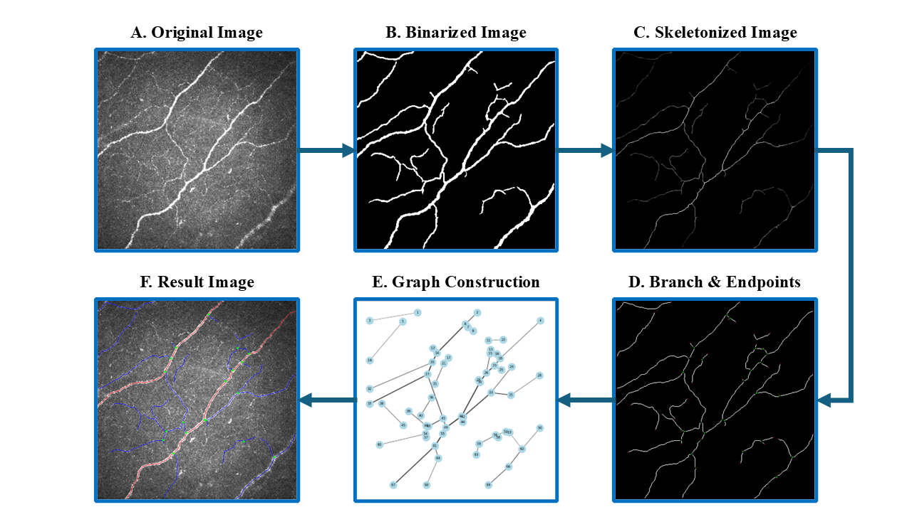
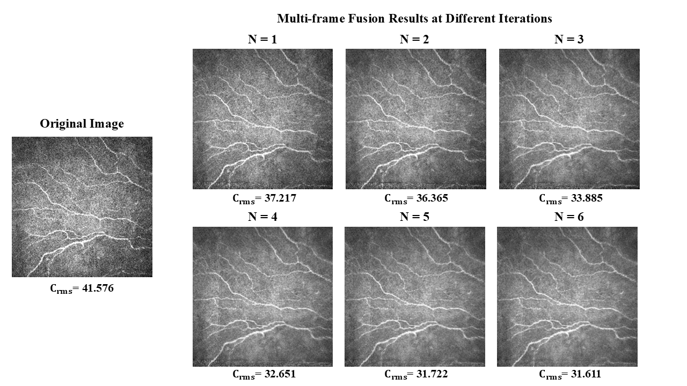
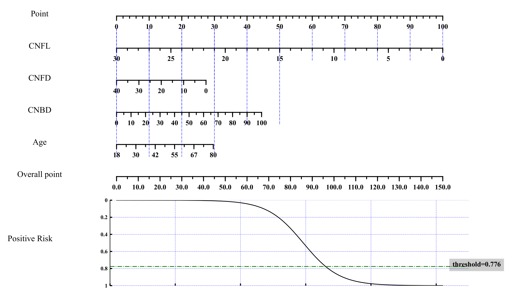
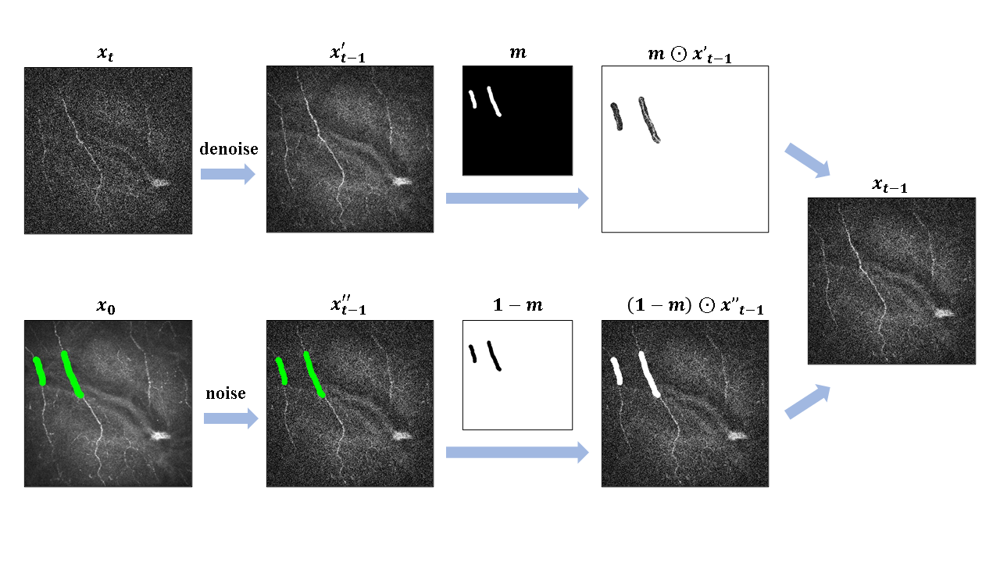
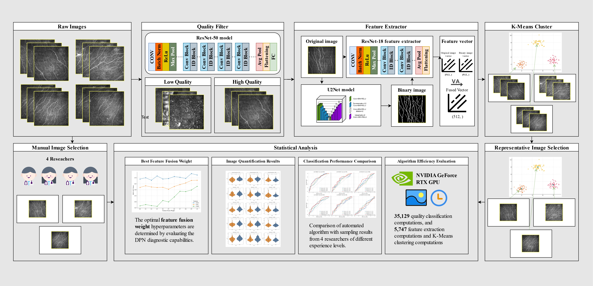

反应速度
变绿后尽快点击
我是 山东大学 第一临床学院的博士研究生，导师为 侯新国教授。
我的研究致力于开发用于角膜神经图像的处理和分析的模型及算法。
完整列表见 Google Scholar。† 表示共同第一作者，* 表示通讯作者。

SuperCCM: An Open Source Python Toolkit for Automated Quantification of Corneal Nerve Fibers in Confocal Microscopy Images
Translational Vision Science & Technology, 2025.


Development of Diagnostic Nomograms Using Corneal Nerve Parameters for Diabetic Peripheral Neuropathy in Type 2 Diabetes Mellitus
Translational Vision Science & Technology, 2025.


写论文累了？来玩一会儿。
变绿后尽快点击
找出相同的 emoji
1–100 之间
10 秒内能点多少下